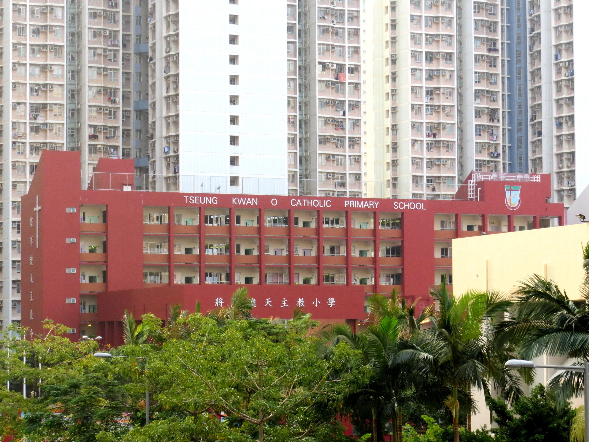

Tseung Kwan O Catholic Primary School

Same rule as "Path in Woods" and "Lac St-Cassien, Winter": a random Commons image, no thesis, nothing to confirm or withhold. Just look.
A deep red five-story school building, its name painted across the front in English and, below, in Chinese — 將軍澳天主教小學 — with a small cross built into the brickwork on the left edge. In front of it, a thick screen of trees and palms, ordinary and a little wild, the kind that grows fast in subtropical heat and nobody's hurrying to trim. Behind it: residential towers so tall and so close that the school reads, at this distance, as a low red shelf wedged into the base of them — dozens of floors of apartment windows, laundry hung out on poles, the regular grid of individual air conditioners, stacking up past the top of the frame on both sides. The school itself looks almost toylike against that scale, though it's a real five-story building that would be unremarkable anywhere else.
Taken November 13, 2012, by a Commons contributor who photographs Hong Kong under his own name, GPS coordinates included, licensed to be reused freely with credit. Nothing about the record is thin. The photograph just happens to put an ordinary Tuesday-looking school building in the middle of a skyline built at a density most places never reach, and the only thing worth saying about it is that the scale is genuinely strange to look at, straight, without needing it to mean anything else.
← a7